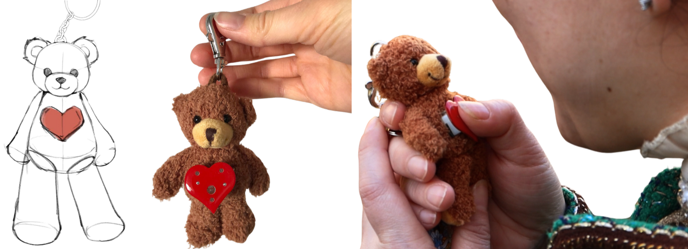
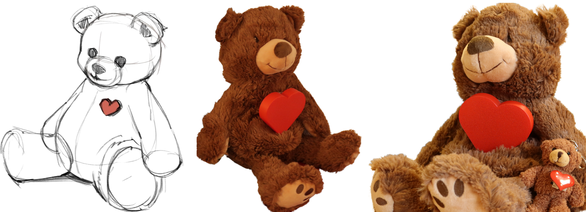
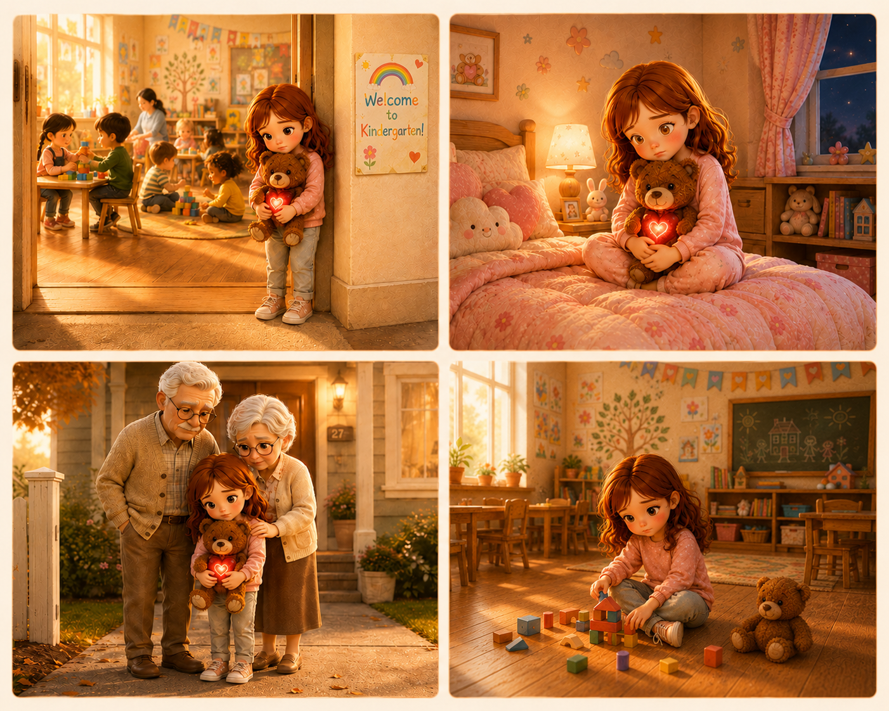
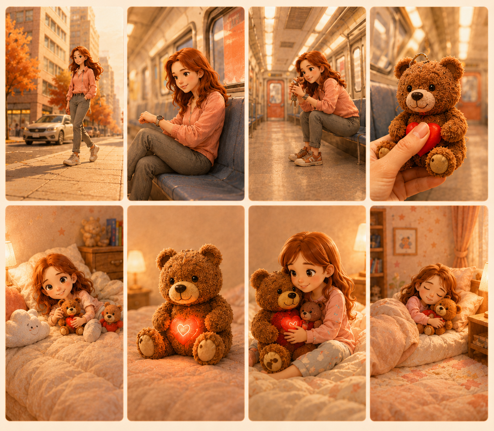
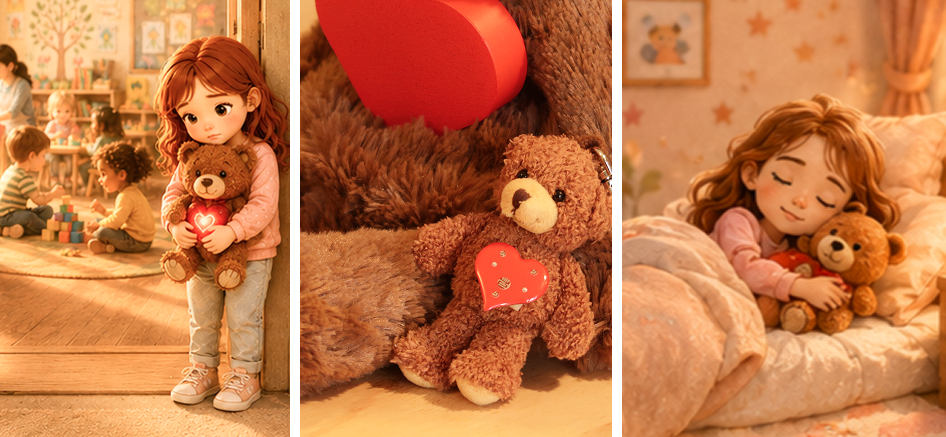
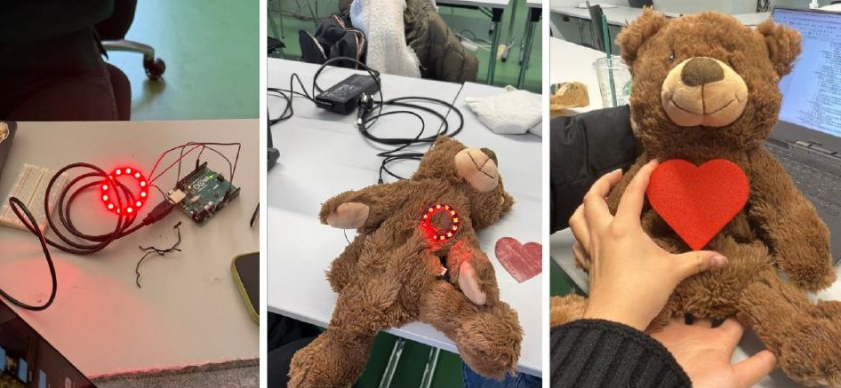
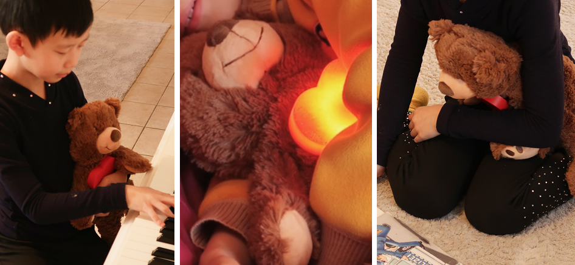

Modern families are often apart — but existing tools aren't designed for the moments that matter most
Work, travel, and daily responsibilities pull families apart. Providing emotional closeness becomes challenging in some situation.
What's missing is a gentle, intuitive way to communicate presence and affection, especially for very young children.
Screens aren't built for children
Video calls and messaging apps are designed for adults. For young children, these interactions can feel overwhelmingdistracting, or simply too complex.
Emotional presence gets lost in digital communication
Existing digital communication tools are not able to replicate the warmth of physical presence and the reassurance of a hug.
How might we create a form of communication that feels as natural as a hug?
There was a need to design a communication experience that goes beyond screens — something tangible, simple, and emotionally meaningful. The goal was to design a physical interaction that offers an intimate way to feel connected for both parent and child.
Turning emotional connection into physical interaction through a pair of connected teddys.
The Communication Companion CoCo bridges distance through two connected companions — one in a parent's pocket, one in a child's arms.

Compact companion for the parent — always close by, one button press can send a signal at any moment of the day.

A soft, comforting plush toy for the child — responds with a glowing heart when a signal is received. A simple hug can play the parents message.
Designing for both emotional clarity and effortless use.
Effortless & intuitive usage — just record, hug, listen. One button sends a message instantly, from anywhere. No screens, no logins, no cognitive load for either parent or child.
Physical objects make the experience intuitive and understandable — especially for children who navigate the world through touch. Audio playback activates through a hug, entirely screen and button free.
Reinforces parent-child closeness even across distance. Light-based responses and voice messages communicate warmth, comfort, and presence.
Uses a beloved, familiar object — the teddy bear — as the medium of connection. Already trusted and comforting to the child, it transforms emotional communication into something huggable and real.
Grounding the design in real user needs and behaviours.
CoCo was shaped around two core users whose needs guided every decision — from the simplicity of the button to the softness of the plush material.
Young children who seek comfort through familiar, physical objects — communicating through touch rather than words or screens.

Working parents, separated families, and caregivers who want to stay emotionally present throughout the day without picking up a phone.

Design Insight
These personas guided decisions around simplicity, feedback type, and form factor at every stage. The child persona in particular pushed us toward a purely tactile and light-based response — removing any element that required reading, listening, or complex interpretation.
Bringing CoCo to life through storytelling.
A storyboard illustrating CoCo in daily use, alongside four scenarios exploring how families might connect across different situations and settings.


Exploring how connection can be felt, not just seen or heard.
The project began with exploring how people maintain emotional closeness at a distance. Early ideation focused on non-digital communication, leading to concepts centred around touch, light, and physical presence.
- Experience pattern
- Problem statement
- User group
- Goal & soultion concept
- Sketches of connected object concepts
- State chart & logo design iterations
- User personas, storyboard & scenarios
- Regular discussion & feedback in class
- Deciding on/ordering compatible products and materials
- Embedding & connecting LEDs
- 3D printing heart cover
- Filming & photography with potential users
- Video production (Editing, Cutting, Voice-Over)
- Visual storytelling and documentation
- Presentation & publication (blog post with final video)
A working prototype, a visual story, and a film — to make the feeling real.
The final concept was presented through outputs focused on conveying not just how the product works, but how it feels to use it.

Documentation and visual presentation conveying the emotional intent behind every design decision.
- Product ideation iterations
- From concept sketches to final objects

A working pair of CoCo companions demonstrating the full interaction loop — from heart press to light response.
- Soft LED feedback
- Touch & squeeze sensor in the teddy's chest
- Single press-button on the keychain
- Wireless signal transmission

A short in-action marketing video capturing our product in a real-world scenario — showing how CoCo fits into the everyday moments between parent and child.
I shaped the experience from ideation to final execution
Across this project I worked end-to-end — from framing the emotional design challenge to producing the final video and presentation materials.
The most important interactions are often very simple: a single touch can communicate more than a thousand words.